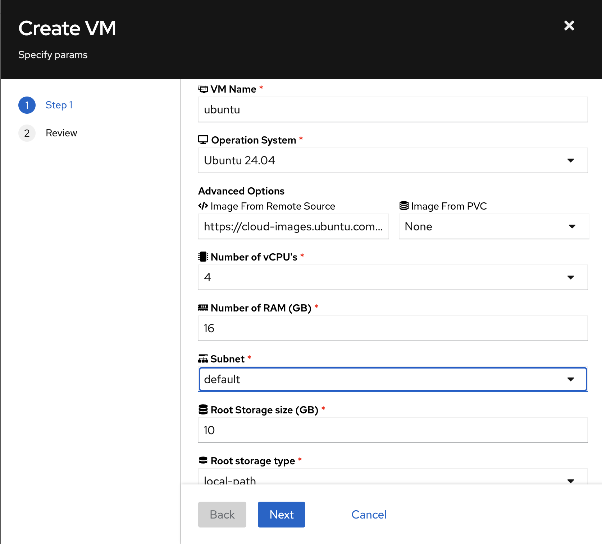

Deploying VMs & Containers ¶
This tutorial walks you through deploying virtual machines and containers in Kube-DC. You'll learn both the UI-based approach and how to use kubectl with YAML manifests.
Prerequisites ¶
Before starting this tutorial, ensure you have:
- Access to a Kube-DC cluster
- The
kubectlcommand-line tool installed - The
virtctlplugin installed for KubeVirt (optional, but recommended) - A project with the necessary permissions to create VMs and containers
Understanding VM Components in Kube-DC ¶
Kube-DC's virtualization is powered by KubeVirt and consists of several components:
- VirtualMachine (VM): Defines the VM configuration and lifecycle
- DataVolume: Manages the VM's disk image(s)
- VirtualMachineInstance (VMI): Represents a running instance of a VM
Creating a VM Using the Kube-DC UI ¶
Step 1: Navigate to VM Creation ¶
- Log in to the Kube-DC dashboard
- Select your project from the dropdown menu (e.g., "demo")
- Navigate to "Virtual Machines" in the left sidebar
- Click the "+" button to create a new VM
Step 2: Configure Basic VM Parameters ¶
In the VM creation wizard, specify the basic parameters:
- VM Name: Enter a name for your VM (e.g., "new-vm-name")
- Operation System: Select from the dropdown (e.g., "Ubuntu 24.04")
- Advanced Options: Expand this section if you want to customize the image source

Step 3: Configure VM Resources ¶
Continue configuring the VM:
- Number of vCPUs: Select the number of virtual CPUs
- RAM (GB): Specify the amount of memory
- Subnet: Choose the network for your VM
- Root Storage Size (GB): Set the disk size
- Root Storage Type: Select the storage class
Step 4: Review and Create ¶
- Click "Next" to proceed to the review page
- Review the generated VM configuration
- The UI shows the actual YAML that will be applied
- Click "Finish" to create the VM
Step 5: Monitor VM Creation ¶
After creation:
- You'll be redirected to the VM list
- Wait for the VM to reach "Running" state
- Note the assigned IP address
Managing VMs via the UI ¶
Viewing VM Details ¶
Click on a VM name to view its details page, which includes:
- Guest OS: Information about the operating system
- VM Details: Status, VPC subnet, and node placement
- Performance Metrics: Real-time CPU, memory, and storage usage
- Conditions: Agent connection and other status indicators

Accessing VM Console ¶
From the VM details page, you have two options:
- Launch Remote Console: Opens a graphical console in your browser
- Launch SSH Terminal: Opens a web-based SSH terminal
These options provide direct access to your VM without requiring SSH client configuration.
VM Actions ¶
The UI supports common VM management actions:
- Start/Stop: Control the VM power state
- Restart: Reboot the VM
- Delete: Remove the VM and its resources
- Configure: Modify VM settings
Creating a VM Using kubectl Manifests ¶
For automation or GitOps workflows, you can create VMs using kubectl and YAML manifests.
Step 1: Create DataVolume ¶
First, create a DataVolume to serve as the VM's disk:
apiVersion: cdi.kubevirt.io/v1beta1
kind: DataVolume
metadata:
name: ubuntu-vm-disk
namespace: shalb-demo
spec:
pvc:
accessModes:
- ReadWriteOnce
resources:
requests:
storage: 10G
storageClassName: local-path
source:
http:
url: https://cloud-images.ubuntu.com/noble/current/noble-server-cloudimg-amd64.img
Apply this manifest:
Step 2: Create the VM Definition ¶
Create a VM manifest:
apiVersion: kubevirt.io/v1
kind: VirtualMachine
metadata:
name: ubuntu-vm
namespace: shalb-demo
spec:
running: true
template:
spec:
networks:
- name: vpc_net_0
multus:
default: true
networkName: shalb-demo/default
domain:
devices:
interfaces:
- name: vpc_net_0
bridge: {}
disks:
- disk:
bus: virtio
name: root-volume
- name: cloudinitdisk
disk:
bus: virtio
cpu:
cores: 2
memory:
guest: 4G
volumes:
- dataVolume:
name: ubuntu-vm-disk
name: root-volume
- name: cloudinitdisk
cloudInitNoCloud:
userData: |-
#cloud-config
chpasswd: { expire: False }
password: temppassword
ssh_pwauth: True
package_update: true
package_upgrade: true
packages:
- qemu-guest-agent
runcmd:
- [ systemctl, enable, qemu-guest-agent ]
- [ systemctl, start, qemu-guest-agent ]
Apply the VM manifest:
Step 3: Monitor VM Status ¶
Check the status of your VM:
VM Examples for Different Operating Systems ¶
Kube-DC supports various operating systems. Here are examples for the most common ones:
Debian ¶
apiVersion: cdi.kubevirt.io/v1beta1
kind: DataVolume
metadata:
name: debian-base-img
spec:
pvc:
accessModes:
- ReadWriteOnce
resources:
requests:
storage: 14G
storageClassName: local-path
source:
http:
url: https://cloud.debian.org/images/cloud/bookworm/latest/debian-12-generic-amd64.qcow2
---
apiVersion: kubevirt.io/v1
kind: VirtualMachine
metadata:
name: debian-vm
namespace: shalb-demo
spec:
running: true
template:
spec:
networks:
- name: vpc_net_0
multus:
default: true
networkName: shalb-demo/default
domain:
devices:
interfaces:
- name: vpc_net_0
bridge: {}
disks:
- disk:
bus: virtio
name: root-volume
- name: cloudinitdisk
disk:
bus: virtio
cpu:
cores: 1
memory:
guest: 2G
volumes:
- dataVolume:
name: debian-base-img
name: root-volume
- name: cloudinitdisk
cloudInitNoCloud:
userData: |-
#cloud-config
chpasswd: { expire: False }
password: temppassword
ssh_pwauth: True
package_update: true
packages:
- qemu-guest-agent
runcmd:
- [ systemctl, start, qemu-guest-agent ]
Alpine Linux ¶
apiVersion: cdi.kubevirt.io/v1beta1
kind: DataVolume
metadata:
name: alpine-base-img
spec:
pvc:
accessModes:
- ReadWriteOnce
resources:
requests:
storage: 2G
storageClassName: local-path
source:
http:
url: https://dl-cdn.alpinelinux.org/alpine/v3.19/releases/cloud/nocloud_alpine-3.19.1-x86_64-bios-cloudinit-r0.qcow2
CentOS Stream 9 ¶
apiVersion: cdi.kubevirt.io/v1beta1
kind: DataVolume
metadata:
name: centos-base-img
spec:
pvc:
accessModes:
- ReadWriteOnce
resources:
requests:
storage: 10G
storageClassName: local-path
source:
http:
url: https://cloud.centos.org/centos/9-stream/x86_64/images/CentOS-Stream-GenericCloud-9-latest.x86_64.qcow2
Note: CentOS Stream 9 requires additional SELinux configuration to enable guest agent SSH key injection. The OS configuration includes proper SELinux booleans and contexts to allow guest agent operations. See the CentOS example in examples/virtual-machine/centos-8.yaml for the complete cloud-init configuration with SELinux setup.
Virtual Machine Health Checks ¶
Kube-DC supports VM health checks to ensure your VMs are running properly:
spec:
template:
spec:
readinessProbe:
guestAgentPing: {}
failureThreshold: 10
initialDelaySeconds: 20
periodSeconds: 10
timeoutSeconds: 5
livenessProbe:
failureThreshold: 10
initialDelaySeconds: 120
periodSeconds: 20
timeoutSeconds: 5
httpGet:
port: 80
Exposing VM Services ¶
Creating a Service for VM ¶
To expose a service running on your VM:
apiVersion: v1
kind: Service
metadata:
name: vm-ssh-service
namespace: shalb-demo
annotations:
service.nlb.kube-dc.com/bind-on-default-gw-eip: "true"
spec:
type: LoadBalancer
selector:
vm.kubevirt.io/name: ubuntu-vm
ports:
- name: ssh
protocol: TCP
port: 2222
targetPort: 22
Apply this service:
Using Floating IPs for VMs ¶
You can assign a floating IP to your VM for direct external access:
apiVersion: kube-dc.com/v1
kind: FIp
metadata:
name: ubuntu-vm-fip
namespace: shalb-demo
spec:
ipAddress: 10.0.10.171
eip: vm-eip
First, ensure you have an EIP:
Deploying Containers Alongside VMs ¶
Kube-DC allows you to run containers alongside VMs. Here's how to deploy a simple Nginx container:
apiVersion: apps/v1
kind: Deployment
metadata:
name: nginx
namespace: shalb-demo
spec:
replicas: 2
selector:
matchLabels:
app: nginx
template:
metadata:
labels:
app: nginx
spec:
containers:
- name: nginx
image: nginx:latest
ports:
- containerPort: 80
resources:
requests:
memory: "64Mi"
cpu: "250m"
limits:
memory: "128Mi"
cpu: "500m"
Create a service for the Nginx deployment:
apiVersion: v1
kind: Service
metadata:
name: nginx-service
namespace: shalb-demo
annotations:
service.nlb.kube-dc.com/bind-on-default-gw-eip: "true"
spec:
type: LoadBalancer
selector:
app: nginx
ports:
- port: 80
targetPort: 80
Best Practices for VM Management ¶
Resource Allocation ¶
- Allocate appropriate resources based on the OS and workload requirements
- Monitor VM performance to adjust resources as needed
- Use resource quotas to prevent resource exhaustion
Security ¶
- Change default passwords immediately
- Use SSH keys instead of passwords when possible
- Keep guest OS updated with security patches
- Apply network policies to control VM traffic
Efficiency ¶
- Use cloud-init for automated VM configuration
- Create VM templates for standardized deployments
- Use the smallest OS image that meets your requirements
Troubleshooting VMs ¶
Common Issues ¶
-
VM stuck in provisioning: Check DataVolume status and events
-
VM not accessible via network: Verify network configuration
-
Cloud-init not running: Check cloud-init logs inside the VM
Accessing VM Logs ¶
kubectl get events -n shalb-demo
virtctl console ubuntu-vm -n shalb-demo
virtctl logs ubuntu-vm -n shalb-demo
Advanced KubeVirt Features ¶
For more advanced features, refer to the KubeVirt documentation:
Conclusion ¶
You've now learned how to deploy and manage VMs and containers in Kube-DC using both the intuitive UI and kubectl manifests. This hybrid approach allows you to choose the most appropriate method for your workflow, whether you prefer interactive management or automation through GitOps practices.